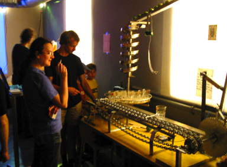

|  |
.......................... ROBOMOJI
Dieser Cocktail Roboter von Robert Martin vereinigt die Kunst des Mojito-Mixens mit
der Perfektion industrieller Fertigungstechnik. Mikroprozessor gesteuert werden auf fünf
verschiedenen Stationen Limetten gepresst, Zucker und Spirituosen portioniert, die Zutaten
mittels Stampfer vermengt und die richtige Portion Eis beigefügt.
Ein Kompressor und Pneumatik-Zylinder geben Robomoji genug Kraft auch für längere Cocktail-Abende
und ein Durchhaltevermögen, von dem so mancher Barmixer nur träumen kann...
|